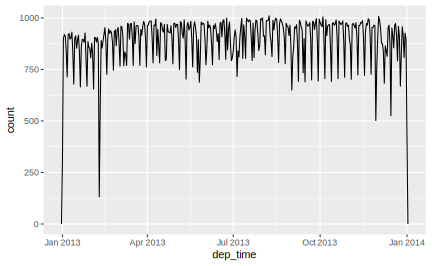
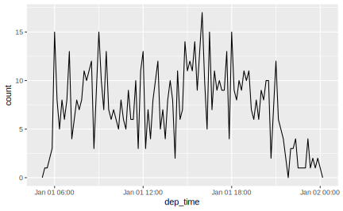
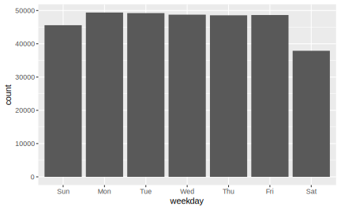
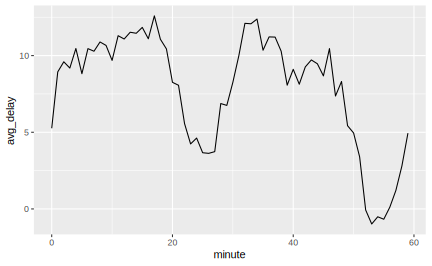
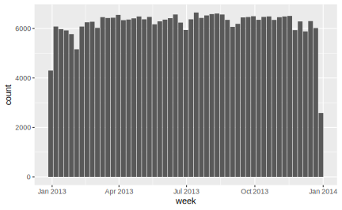
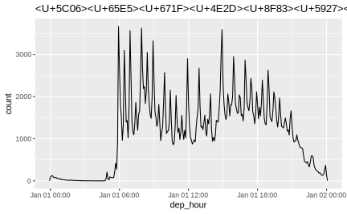
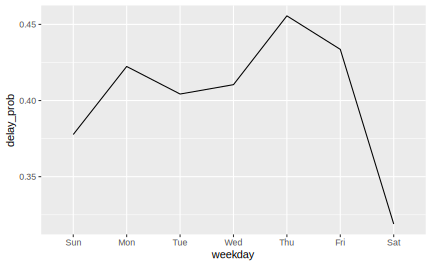
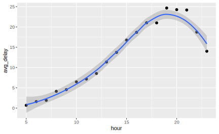

4 lubridate
本章将介绍如何在 R 中处理日期和时间。乍看起来，日期和时间非常容易，但是随着对他们的了解越来越多，我们就会越来越发现其复杂之处。思考一下下面三个看似很简单的问题：
- 确定闰年的完整规则是什么？
“四年一闰，百年不闰，四百年再闰”
- 每一天都是24小时吗？
世界上很多地区使用夏时制（不包括中国），因此很多天是23个小时，有些天则是25个小时。
- 每分钟都是60秒吗？
因为地球自转正在逐渐变慢，所以有时候要增加一个“闰秒”，有些分钟就变成了61秒。目前，全球已经进行了27次闰秒，均为正闰秒。最近一次闰秒在北京时间2017年1月1日7时59分59秒（时钟显示07:59:60）出现。这也是本世纪的第五次闰秒。
日期和时间非常复杂，因为它们要兼顾两种物理现象（地球的自转以及围绕太阳的公转）和一系列地理政治现象（包括月份、市区和夏时制）。本章主要讨论 lubridate 包，它可以使得R对日期和时间的处理更加容易。lubridate 不是 tidyverse 的核心 R 包，故需要手动加载。此外还需要 nycflights 作为练习数据。
4.1 创建日期和时间
表示日期或时间的数据有3种类型:
- 日期： 用年月日表示，在tibble中显示为
<date>
- 时间： 一天中的某个时刻，用24小时制表示，在tibble中显示为
<time>
- 日期时间: 可以唯一标识某个时刻（通常精确到秒）的日期+时间，在tibble中显示为
<dttm>。而这种类型在R语言的其他地方被称作POSIXct
如果能够满足需要，就应该使用最简单的数据类型。这意味着只要能够使用日期型数据，那么就不应该使用日期时间型数据。日期时间型数据要复杂很多，因为要处理时期，我们会在本章末尾继续讨论这个问题。
要想得到当前日期或当前时期时间，可以使用 today() 或 now() 函数：
除此之外，以下3种方法也可以创建日期或时间：
- 通过字符串创建
- 通过日期时间的各个成分创建
- 通过现有的日期时间对象创建
4.1.1 通过字符串创建
日期时间数据经常用字符串表示。在事先知晓各个组成部分顺序的前提下，通过 lubridate 中的一些辅助函数，可以轻松将字符串转换为日期时间格式。因为要想使用函数，需要先确定年、月、日在日期数据中的顺序，然后按照同样的顺讯排列字母 y、m、d，这样就可以组成能够创建日期格式的 lubridate 函数名称，例如：
ymd("2017-03-01")
#> [1] "2017-03-01"
mdy("January 1st,2017")
#> [1] "2017-01-01"
dmy("31-Jan-2017")
#> [1] "2017-01-31"这些函数也可以接受不带引号的数值，这是创建单个时期时间对象的最简单的方法。在筛选日期时间数据时，就可以使用这种方法：
ymd()和其他类似函数可以创建日期数据。想要创建日期时间型数据，可以在后面加一个下划线，以及h、m、s之中的一个或多个字母（依然要遵循顺序），这样就可以得到解析日期时间数据的函数了：
ymd_hms("2017-01-31 20:11:59")
#> [1] "2017-01-31 20:11:59 UTC"
mdy_hm("01/31/2017 08:01")
#> [1] "2017-01-31 08:01:00 UTC"如果用类似函数尝试解析包含无效内容的字符串，将会返回 NA ：
通过添加一个时区参数，可以将一个时期强制转换为日期时间：
4.1.2 通过各个成分创建
除了单个字符串，日期时间数据的各个成分还经常分布在表格的多个列中。flights 数据就是这样的：
flights %>% select(year, month, day, hour, minute)
#> # A tibble: 336,776 x 5
#> year month day hour minute
#> <int> <int> <int> <dbl> <dbl>
#> 1 2013 1 1 5 15
#> 2 2013 1 1 5 29
#> 3 2013 1 1 5 40
#> 4 2013 1 1 5 45
#> 5 2013 1 1 6 0
#> 6 2013 1 1 5 58
#> # … with 3.368e+05 more rows想要用这样的多个变量创建一个完整的日期或时间数据，可以使用make_date(year,month.day,hour,min,sec,tz)(创建日期)或make_datetime(year,month.day,hour,min,sec,tz)（创建日期时间）函数:
## 使用make_datetime
flights %>%
select(year, month, day, hour, minute) %>%
mutate(departure = make_datetime(year, month, day, hour, minute))
#> # A tibble: 336,776 x 6
#> year month day hour minute departure
#> <int> <int> <int> <dbl> <dbl> <dttm>
#> 1 2013 1 1 5 15 2013-01-01 05:15:00
#> 2 2013 1 1 5 29 2013-01-01 05:29:00
#> 3 2013 1 1 5 40 2013-01-01 05:40:00
#> 4 2013 1 1 5 45 2013-01-01 05:45:00
#> 5 2013 1 1 6 0 2013-01-01 06:00:00
#> 6 2013 1 1 5 58 2013-01-01 05:58:00
#> # … with 3.368e+05 more rows因为这里没有给出分钟，所以 make_datetime() 默认其 为0.
flights 数据集中的 hour 和 time 均是航班起飞时间的预计值。为了算出实际起飞、到达时间，我们需要使用dep_time和arr_time这两个变量，不过，它们同时包括了小时和分钟数：
flights %>% select(dep_time,
arr_time,
sched_dep_time,
sched_arr_time)
#> # A tibble: 336,776 x 4
#> dep_time arr_time sched_dep_time sched_arr_time
#> <int> <int> <int> <int>
#> 1 517 830 515 819
#> 2 533 850 529 830
#> 3 542 923 540 850
#> 4 544 1004 545 1022
#> 5 554 812 600 837
#> 6 554 740 558 728
#> # … with 3.368e+05 more rows为了创建出表示实际出发和到达时间的日期时间型数据，我们首先编写一个函数以使make_datetime函数适应dep_time和arr_time这种比较奇怪的表示方式，思想是使用模运算将小时成分与分钟成分分离。一旦创建了日期时间变量，我们就在本章剩余部分使用这些变量进行讨论：
make_datetime_100 <- function(year, month, day, time) {
hour = time %/% 100
minute = time %% 100
make_datetime(year, month, day, hour, minute)
}
(flights_dt <- flights %>%
filter(!is.na(dep_time), !is.na(arr_time)) %>%
mutate(
dep_time = make_datetime_100(year, month, day, dep_time),
arr_time = make_datetime_100(year, month, day, arr_time),
sched_dep_time = make_datetime_100(year, month, day, sched_dep_time),
sched_arr_time = make_datetime_100(year, month, day, sched_arr_time)) %>%
select(origin,dest,ends_with("delay"), ends_with("time"))
)
#> # A tibble: 328,063 x 9
#> origin dest dep_delay arr_delay dep_time sched_dep_time
#> <chr> <chr> <dbl> <dbl> <dttm> <dttm>
#> 1 EWR IAH 2 11 2013-01-01 05:17:00 2013-01-01 05:15:00
#> 2 LGA IAH 4 20 2013-01-01 05:33:00 2013-01-01 05:29:00
#> 3 JFK MIA 2 33 2013-01-01 05:42:00 2013-01-01 05:40:00
#> 4 JFK BQN -1 -18 2013-01-01 05:44:00 2013-01-01 05:45:00
#> 5 LGA ATL -6 -25 2013-01-01 05:54:00 2013-01-01 06:00:00
#> 6 EWR ORD -4 12 2013-01-01 05:54:00 2013-01-01 05:58:00
#> # … with 3.281e+05 more rows, and 3 more variables: arr_time <dttm>,
#> # sched_arr_time <dttm>, air_time <dbl>我们还可以使用这些数据做出一年间出发时间或某一天内出发时间的可视化分布（精确到分钟）。注意，当将日期时间型数据当做数值使用时（比如在直方图中），1 表示一秒，因此分箱宽度 86400 才能够表示一天。对于日期型数据(通过 make_date()创建)，1则表示一天。：
## 一年内起飞时间的分布
flights_dt %>%
ggplot() +
geom_freqpoly(aes(x = dep_time),binwidth = 86400) ## 86000秒= 1天
## 1月1日起飞时间的分布
flights_dt %>%
filter(dep_time < ymd(20130102)) %>%
ggplot(aes(x=dep_time))+
geom_freqpoly(binwidth = 600) ## 600秒 = 10分钟
4.1.3 日期时间型和日期型数据的相互转换
有时候需要在日期时间和日期型数据之间进行转换，这正是as_datetime()和as_date()函数的功能：
today()
#> [1] "2019-12-12"
as_datetime(today())
#> [1] "2019-12-12 UTC"
now()
#> [1] "2019-12-12 00:49:34 CST"
as_date(now())
#> [1] "2019-12-12"有时人们会使用距离”Unix时间戳“（即1970-01-01）的偏移量来表示日期时间。如果偏移量单位是秒，就用as_datetime()函数来转换 ； 如果偏移量单位是天，就用as_date()函数来转换：
4.1.4 练习
4.2 日期时间成分
现在我们知道了如何将日期时间型数据保存在 R 的相应数据结构中。接下来我们研究一下能够对这些数据进行何种处理。本节将重点关注如何获取日期时间型或者日期型数据中的成分，例如如何从一个日期中获得相应的年、月、日。
4.2.1 获取成分
如果想要提取出日其中的独立成分，可以使用以下访问器函数（accessor function）： year()、month()、mday()(一个月中的第几天)、yday()(一年中的第几天)、wday()(一周中的第几天，即星期几)、hour()、minute()、second() ：
## 创建一个日期时间型数据
datetime <- ymd_hms("2016-07-08 12:34:56")
year(datetime)
#> [1] 2016
month(datetime)
#> [1] 7
mday(datetime)
#> [1] 8
yday(datetime)
#> [1] 190
wday(datetime)
#> [1] 6
hour(datetime)
#> [1] 12
minute(datetime)
#> [1] 34
second(datetime)
#> [1] 56对于wday()和month()函数，可以设置 label = T 来返回月份名称和星期数的缩写，还可以设置abbr = F来返回全名 ; 这样做还有一个重要意义，它将返回的字符串变为有序因子, 否则 ggplot2 将其作为连续型变量对待：
month(datetime, label = T)
#> [1] Jul
#> 12 Levels: Jan < Feb < Mar < Apr < May < Jun < Jul < Aug < Sep < ... < Dec
wday(datetime, label = T, abbr = F)
#> [1] Friday
#> 7 Levels: Sunday < Monday < Tuesday < Wednesday < Thursday < ... < Saturday通过wday()函数，我们可以知道在工作日出发的航班要多于周末出发的航班：

再看一个使用minute()函数获取分钟成分的例子。比如我们想知道出发时间的分钟数与平均到达延误时间的关系：
flights_dt %>%
mutate(minute = minute(dep_time)) %>%
group_by(minute) %>%
summarize(avg_delay = mean(arr_delay, na.rm = T)) %>%
ggplot(aes(minute, avg_delay))+
geom_line()
我们可以发现一个有趣的趋势，似乎在2030分钟和第5060分钟出发的航班的到达延误时间远远低于其他时间出发的航班。
4.2.2 舍入（Rouding）
另一种获取日期成分的办法是将日期时间型数据近似到一个邻近的时间单位上，这要通过 round_date()、floor_date()、ceiling_date() 等函数。这些函数的参数都包括一个待调整的日期时间型数据（可以是向量），以及希望近似到的时间单位。函数会将这个日期时间型数据舍下 floor_date()、入上ceiling_date()或者四舍五入 round_date() 到这个时间单位。例如，以下代码可以绘制出每周的航班数量：

下面的例子可以更深入地了解这个函数族的用法：
x <- ymd_hms("2009-08-03 12:01:59.23")
round_date(x, ".5s")
#> [1] "2009-08-03 12:01:59 UTC"
round_date(x, "sec")
#> [1] "2009-08-03 12:01:59 UTC"
round_date(x, "second")
#> [1] "2009-08-03 12:01:59 UTC"
round_date(x, "minute")
#> [1] "2009-08-03 12:02:00 UTC"
round_date(x, "5 mins")
#> [1] "2009-08-03 12:00:00 UTC"
round_date(x, "hour")
#> [1] "2009-08-03 12:00:00 UTC"
round_date(x, "2 hours")
#> [1] "2009-08-03 12:00:00 UTC"
round_date(x, "day")
#> [1] "2009-08-04 UTC"
round_date(x, "week")
#> [1] "2009-08-02 UTC"
round_date(x, "month")
#> [1] "2009-08-01 UTC"
round_date(x, "bimonth") ## 舍入到1月、3月、5月、7月、9月和11月上
#> [1] "2009-09-01 UTC"
round_date(x, "quarter") == round_date(x, "3 months")
#> [1] TRUE
round_date(x, "halfyear")
#> [1] "2009-07-01 UTC"
round_date(x, "year")
#> [1] "2010-01-01 UTC"4.2.3 设置成分
还可以使用访问器函数来指定日期时间型数据中的成分：
(datetime <- ymd_hms("2016-07-08,12:34:56"))
#> [1] "2016-07-08 12:34:56 UTC"
year(datetime) <- 2020
month(datetime) <- 11
mday(datetime) <- 05
hour(datetime) <- 01
datetime
#> [1] "2020-11-05 01:34:56 UTC"除了直接修改，还可以通过update()函数来更新一个日期时间型数据，只需要在参数中指定各个成分的新值。这样也可以同时设置多个成分的更改：
datetime <- ymd_hms("2016-07-08,12:34:56")
update(datetime,year = 2000, month = 11, mday = 05, hour = 01)
#> [1] "2000-11-05 01:34:56 UTC"如果修改yday，相当于同时修改mday和month:
datetime <- ymd_hms("2016-07-08,12:34:56")
update(datetime, yday = 1)
#> [1] "2016-01-01 12:34:56 UTC"update()函数还有一种比较巧妙的用法，比如我们想可视化一年中所有航班的的出发时间在一天中的分布：
flights_dt %>%
mutate(dep_hour = update(dep_time, yday = 1)) %>%
## 将所有出发时间都转为在1月1号的
ggplot(aes(x=dep_hour)) +
geom_freqpoly(binwidth = 300) + ## 五分钟一个分箱
ggtitle("将日期中较大的成分设定为常数来探索其中较小成分的模式")
如果不用 update() 函数，我们可能需要先用hour()、minute()、second()获取三种成分，然后再用make_datetime()对这三种成分进行合并。
4.2.4 练习
Exercise 4.2 以月份作为分组变量，在一年的范围内，航班时间在一天中的分布是如何变化的？
flights_dt %>%
mutate(month = factor(month(dep_time)),
dep_time = update(dep_time,yday = 1)) %>%
ggplot(aes(x=dep_time,color = month)) +
geom_freqpoly(binwidth = 600)
flights_dt %>%
mutate(weekday = wday(dep_time, label = T, abbr = T)) %>%
group_by(weekday) %>%
summarize(delay_prob = mean(arr_delay > 0, na.rm = T)) %>%
ggplot(aes(weekday,delay_prob)) +
geom_line(aes(group = 1))
flights_dt %>%
mutate(hour = hour(sched_dep_time)) %>%
group_by(hour) %>%
summarize(avg_delay = mean(dep_delay, na.rm = T)) %>%
ggplot(aes(hour, avg_delay))+
geom_point()+
geom_smooth()
4.3 时间间隔（Time Span）
接下来我们将讨论如何对时间进行数学运算，其中包括减法、加法和除法。我们可以把用于进行数学运算的时间称为时间间隔，它表示一种跨度，而不是某个静态的时间。本节将介绍3种用于表示时间间隔的重要类：
- 时期（Durations）：以秒为单位表示一段精确的时间
- 阶段(Periods)： 用人类单位定义的时间间隔，如几周或几个月
- 区间(Intervals)：由起点和终点定义的一段时间
4.3.1 时期 Durations
默认情况下，如果我们将两个日期相间，将得到一个 difftime 类对象：
difftime对象的单位可以是秒、分钟、小时、日或周。这种模棱两可的对象处理起来非常困难，，所以 lubridate提供了总是以秒为单位的另一种时间间隔：时期。
可以用很多方便的函数来构造时期，它们有统一的格式d + 时间单位（复数）：
dseconds(15)
#> [1] "15s"
dminutes(10)
#> [1] "600s (~10 minutes)"
dhours(c(12,24))
#> [1] "43200s (~12 hours)" "86400s (~1 days)"
ddays(0:5)
#> [1] "0s" "86400s (~1 days)" "172800s (~2 days)"
#> [4] "259200s (~3 days)" "345600s (~4 days)" "432000s (~5 days)"
dweeks(3) ## 没有dmonths()
#> [1] "1814400s (~3 weeks)"
dyears(1)
#> [1] "31536000s (~52.14 weeks)"时期 Durations 总是以秒为单位来记录时间间隔。使用标准比率（1 分钟为 60 秒，1 小时为 60 分钟，1 天为 24 小时，1 周为 7 天，一年为 365 天）将分钟、小时、周和年转换为秒，从而建立具有更大值的对象。出于相同的原因，没有dmonths()函数, 因为一个月可能有 31 天、30 天、29 天或 28 天，所以 lubridate 不能将它转换为一个确切的秒数。
可以对时期进行加法和乘法操作：
2 * ddays(2)
#> [1] "345600s (~4 days)"
dyears(1) + dweeks(12) + ddays(10)
#> [1] "39657600s (~1.26 years)"最重要的，时期可以和日期时间型数据进行运算 ：
(tomorrow <- today() + ddays(1))
#> [1] "2019-12-13"
(last_year <- now() - dyears(1))
#> [1] "2018-12-12 00:49:40 CST"然而，因为时期表示的是秒为单位的一个精确数值，有时我们会得到意想不到的结果：
one_pm <- ymd_hms("2016-03-12 13:00:00", tz = "America/New_York")
one_pm
#> [1] "2016-03-12 13:00:00 EST"
one_pm + ddays(1)
#> [1] "2016-03-13 14:00:00 EDT"为什么3月12日下午1点加上一天后变成了下午2点？如果仔细观察，就会发现时区发生了变化。因为夏时制，3月12日只有23个小时，但我们告诉R“加上24个小时代表的秒数”，所以得到了一个不正确的时间。
4.3.2 阶段 Periods
为了解决时期对象的问题，lubridate 提供了 阶段 对象。阶段也是一种 time span，但是它不以秒为单位 ； 相反，它使用“人工”时间，比如日和月。这使得阶段使用起来更加符合习惯
one_pm + days(1)告诉 R，加上一天，而不是加上多少秒。
创建阶段对象的函数与时期很类似，只是前面少个“d”，不要把创建阶段的函数与获取时间日期成分的函数搞混了，创建 Periods 的函数都是复数形式：
seconds(15)
#> [1] "15S"
minutes(10)
#> [1] "10M 0S"
hours(c(12,24))
#> [1] "12H 0M 0S" "24H 0M 0S"
days(7)
#> [1] "7d 0H 0M 0S"
months(1:6)
#> [1] "1m 0d 0H 0M 0S" "2m 0d 0H 0M 0S" "3m 0d 0H 0M 0S" "4m 0d 0H 0M 0S"
#> [5] "5m 0d 0H 0M 0S" "6m 0d 0H 0M 0S"
weeks(3)
#> [1] "21d 0H 0M 0S"
years(1)
#> [1] "1y 0m 0d 0H 0M 0S"可以对阶段进行加法和乘法操作：
10 * (months(6) + days(10))
#> [1] "60m 100d 0H 0M 0S"
days(50) + hours(25) + minutes(2)
#> [1] "50d 25H 2M 0S"当然，阶段也可以和日期时间型数据进行运算。与 Durations 相比，使用 Periods 得到的计算结果更符合我们的预期：
## 闰年
ymd("2016-01-01") + dyears(1)
#> [1] "2016-12-31"
ymd("2016-01-01") + years(1)
#> [1] "2017-01-01"
## 夏时制
one_pm + ddays(1)
#> [1] "2016-03-13 14:00:00 EDT"
one_pm + days(1)
#> [1] "2016-03-13 13:00:00 EDT"下面我们使用 Periods 来解决与航班日期有关的一个怪现象。有些飞机似乎从纽约市起飞前就到达了目的地：
flights_dt %>%
filter(arr_time < dep_time) %>%
select(arr_time, dep_time)
#> # A tibble: 10,633 x 2
#> arr_time dep_time
#> <dttm> <dttm>
#> 1 2013-01-01 00:03:00 2013-01-01 19:29:00
#> 2 2013-01-01 00:29:00 2013-01-01 19:39:00
#> 3 2013-01-01 00:08:00 2013-01-01 20:58:00
#> 4 2013-01-01 01:46:00 2013-01-01 21:02:00
#> 5 2013-01-01 00:25:00 2013-01-01 21:08:00
#> 6 2013-01-01 00:16:00 2013-01-01 21:20:00
#> # … with 1.063e+04 more rows这些都是过夜航班。我们使用了同一种日期来表示出发时间和到达时间，但这些航班是在第二天到达的。将每个过夜航班的到达时间加上一个days(1)，就可以解决这个问题了：
flights_dt <- flights_dt %>%
mutate(overnight = arr_time < dep_time,
arr_time = arr_time + days(overnight * 1))
## 这样一来，航班数据就符合常理了
flights_dt %>% filter(overnight, arr_time < dep_time)
#> # A tibble: 0 x 10
#> # … with 10 variables: origin <chr>, dest <chr>, dep_delay <dbl>,
#> # arr_delay <dbl>, dep_time <dttm>, sched_dep_time <dttm>, arr_time <dttm>,
#> # sched_arr_time <dttm>, air_time <dbl>, overnight <lgl>4.3.3 区间 Intervals
显然，dyears(1)/ddays(365)应该返回1，因为时期总是以秒来表示的，表示1年的时间就定义为相当于365天的秒数。
那么years(1) / days(1)应该返回什么呢？如果年份 是 2015 年，那么结果就是 365，但如果年份是 2016 年，那么结果就是 366！没有足够的信息让 lubridate 返回一个明确的结果。lubridate 的做法是给出一个估计值，同时给出一条警告：
如果需要更精确的测量方式，那么就必须使用区间。区间是带有明确起点和终点的时期，这使得它非常精确,可以用interval()来创建一个区间：
一种更简单的创建区间的方式是使用操作符%--%
要想知道一个区间内有多少个阶段，需要使用整数除法。利用区间进行精确计算：
4.3.4 小结
如何在时期、阶段和区间中进行选择呢？只要能够解决问题，我们就应该选择最简单的数据结构。如果只关心物理时间，那么就使用时期 Durations ； 如果还需要考虑人工时间，那么就使用阶段 Periods ； 如果需要找出人工时间范围内有多长的时间间隔，那么就使用区间。
下图总结了不同数据类型之间可以进行的数学运算：

4.3.5 练习
ymd(20150101) + months(0:11)
#> [1] "2015-01-01" "2015-02-01" "2015-03-01" "2015-04-01" "2015-05-01"
#> [6] "2015-06-01" "2015-07-01" "2015-08-01" "2015-09-01" "2015-10-01"
#> [11] "2015-11-01" "2015-12-01"
## To get the vector of the first day of the month for this year, we first need to figure out what this year is, and get January 1st of it
floor_date(today(),"year") + months(0:11)
#> [1] "2019-01-01" "2019-02-01" "2019-03-01" "2019-04-01" "2019-05-01"
#> [6] "2019-06-01" "2019-07-01" "2019-08-01" "2019-09-01" "2019-10-01"
#> [11] "2019-11-01" "2019-12-01"